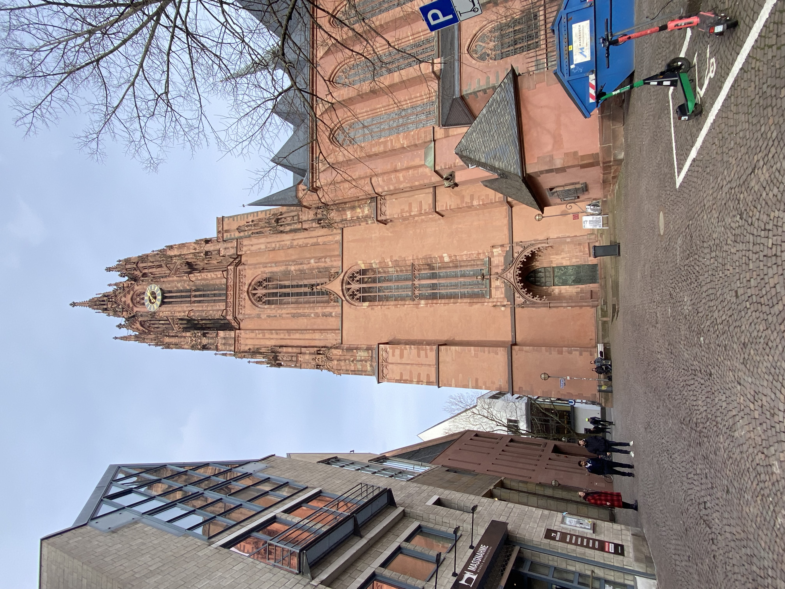
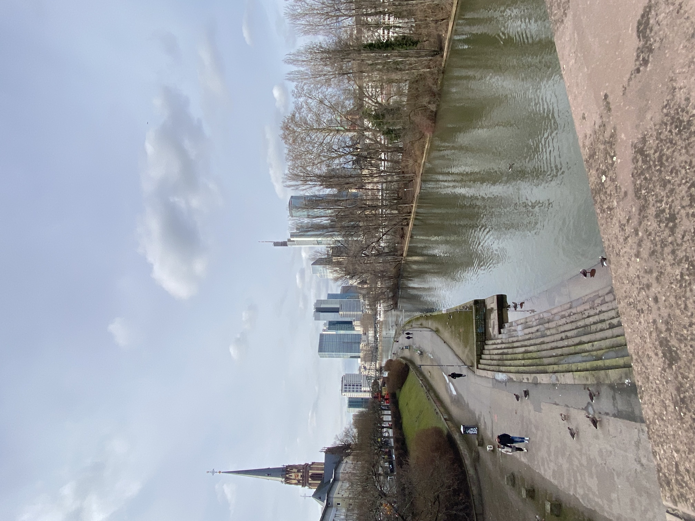
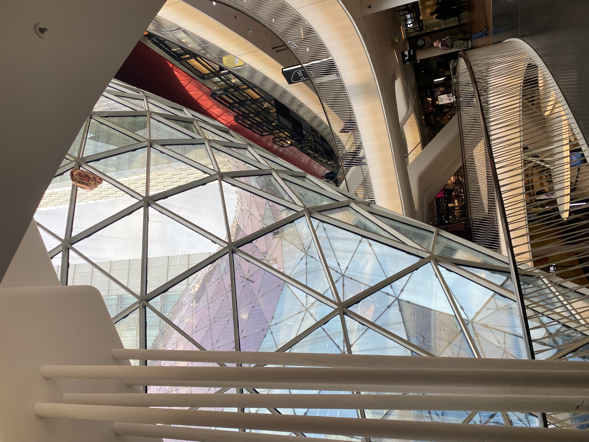

Die Sehnswürdigkeiten

Die große Kirche in Frankfurt am Main heißt Frankfurt Cathedral. Sie befindet sich in der Altstadt der Stadt und ist eines der wichtigsten historischen Gebäude in Frankfurt.
Die Kirche wurde im gotischen Stil gebaut und besteht aus rotem Sandstein. Der hohe Turm ist etwa 95 Meter hoch und kann von vielen Orten in der Stadt gesehen werden. Der Bau der Kirche begann im 13. Jahrhundert und dauerte viele Jahre.
Die Kathedrale spielte auch eine wichtige Rolle in der deutschen Geschichte. Mehrere Kaiser des Heiligen Römischen Reiches wurden hier gekrönt. Deshalb gilt die Kirche als ein sehr bedeutender Ort der deutschen Geschichte.
Heute besuchen viele Touristen die Kirche, um die Architektur zu sehen und den Turm zu besteigen. Von oben hat man einen schönen Blick über die Stadt Frankfurt und den Fluss Main River.

Die bekannte Brücke in Frankfurt am Main heißt Eiserner Steg. Sie ist eine Fußgängerbrücke über den Main River und eine der beliebtesten Sehenswürdigkeiten der Stadt.
Viele Menschen gehen auf diese Brücke, weil man von dort einen sehr schönen Blick auf die Skyline von Frankfurt hat. Wenn man in der Mitte der Brücke steht, kann man die modernen Hochhäuser im Finanzviertel sehen. Deshalb wird Frankfurt manchmal auch „Mainhattan“ genannt.
Die Brücke wurde im 19. Jahrhundert gebaut und verbindet die Altstadt mit dem Stadtteil Sachsenhausen. Heute ist sie besonders bei Touristen und Fotografen sehr beliebt. Viele Besucher machen dort Fotos von der Skyline und vom Fluss.
Außerdem hängen an der Brücke oft viele Liebesschlösser, die Paare dort befestigen. Das macht den Eiserner Steg zu einem romantischen und bekannten Ort in Frankfurt.

Die kleine Stadt Geisenheim liegt im Bundesland Hessen in Germany, nicht weit von der Stadt Wiesbaden entfernt. Die Stadt befindet sich im Rheingau, einer Region, die besonders für ihre Weinberge und ihren Wein bekannt ist.
Geisenheim ist eine eher kleine und ruhige Stadt, aber sie ist sehr bekannt wegen ihrer Hochschule, der Geisenheim University. Dort studieren viele Menschen Themen wie Weinbau, Gartenbau, Lebensmittel und Umwelt. Die Universität hat einen sehr guten Ruf, besonders im Bereich Wein und Landwirtschaft.
Außerdem liegt Geisenheim direkt am Rhine River, was der Stadt eine schöne Landschaft mit vielen Weinbergen und Natur gibt. Viele Besucher kommen auch wegen der ruhigen Atmosphäre und der schönen Umgebung in diese Region.

Das große Einkaufszentrum mit der Glasfassade in Frankfurt am Main heißt MyZeil. Es befindet sich in der bekannten Einkaufsstraße Zeil im Zentrum der Stadt.
Das Gebäude ist besonders bekannt wegen seiner modernen Architektur. Die große Glasfassade hat eine ungewöhnliche Form und sieht fast aus wie ein großer Strudel aus Glas. Dadurch ist das Einkaufszentrum ein sehr auffälliges Gebäude und eine beliebte Sehenswürdigkeit.
Im Inneren von MyZeil gibt es viele Geschäfte, Restaurants und Cafés. Besucher können dort Kleidung, Elektronik und viele andere Produkte kaufen. Außerdem gibt es eine große Rolltreppe, die durch mehrere Etagen führt.
Viele Touristen besuchen MyZeil nicht nur zum Einkaufen, sondern auch, um die beeindruckende Architektur des Gebäudes zu sehen.